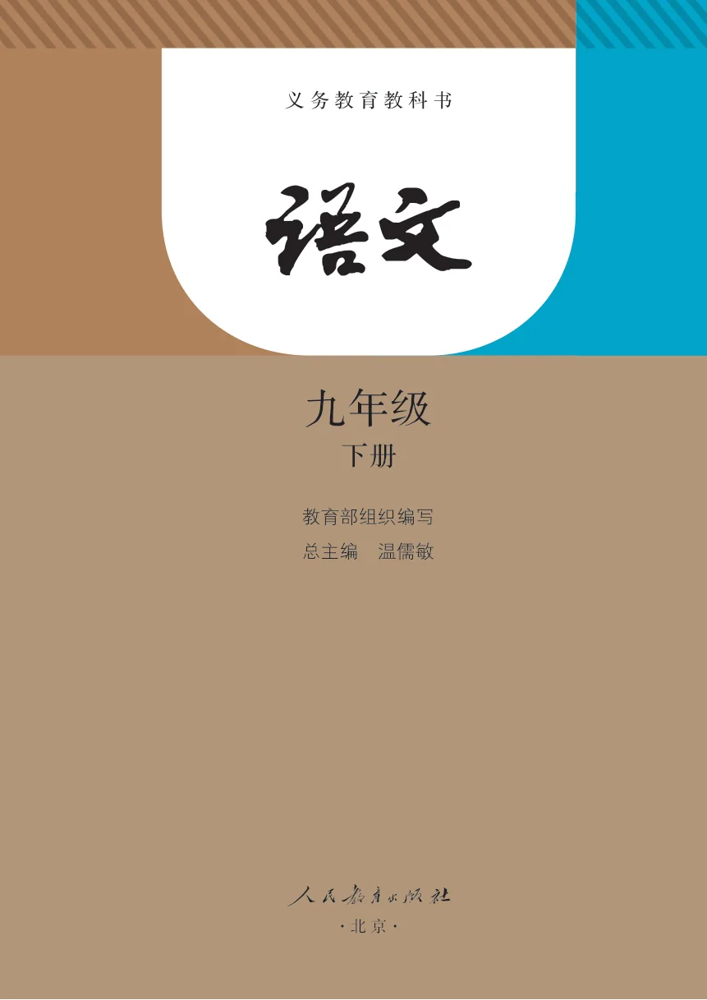
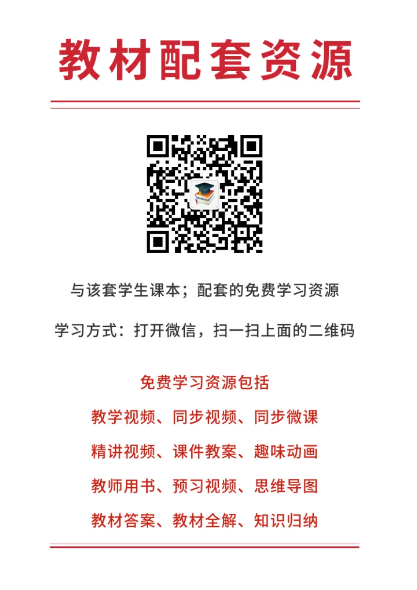
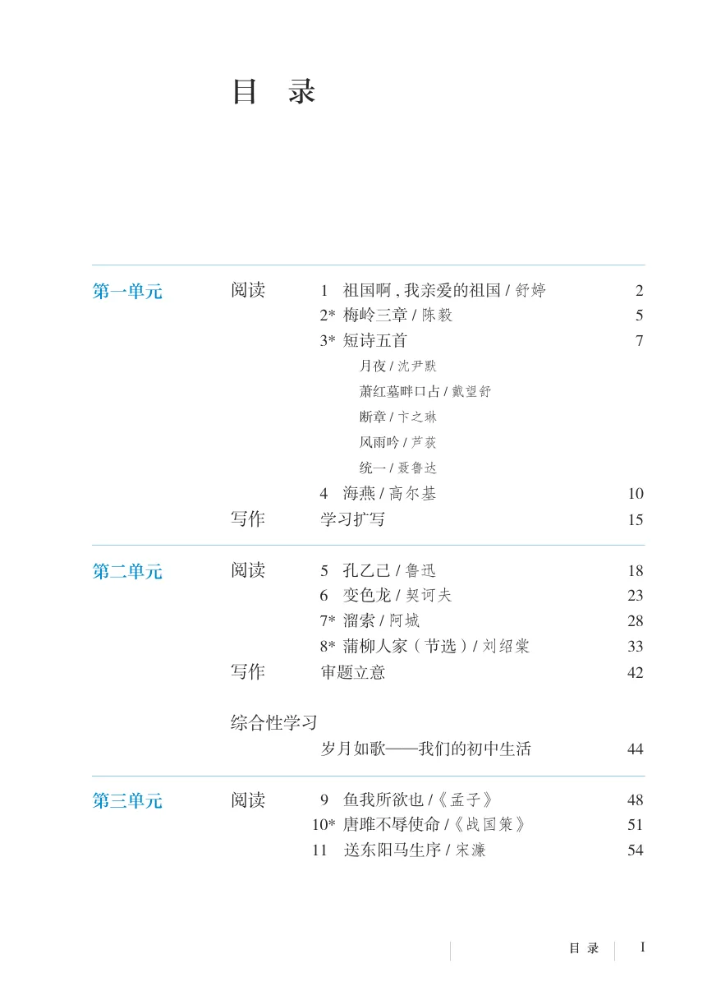
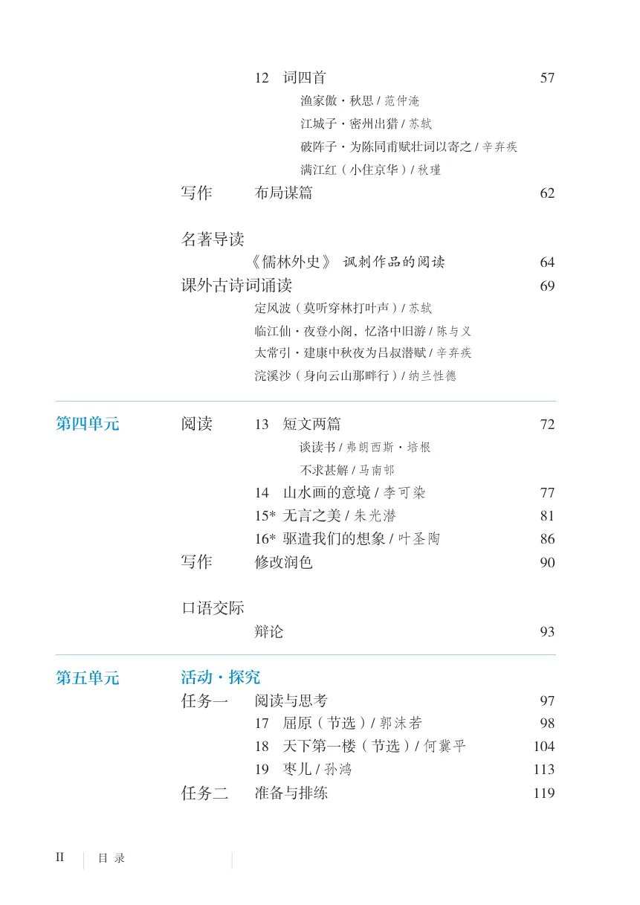
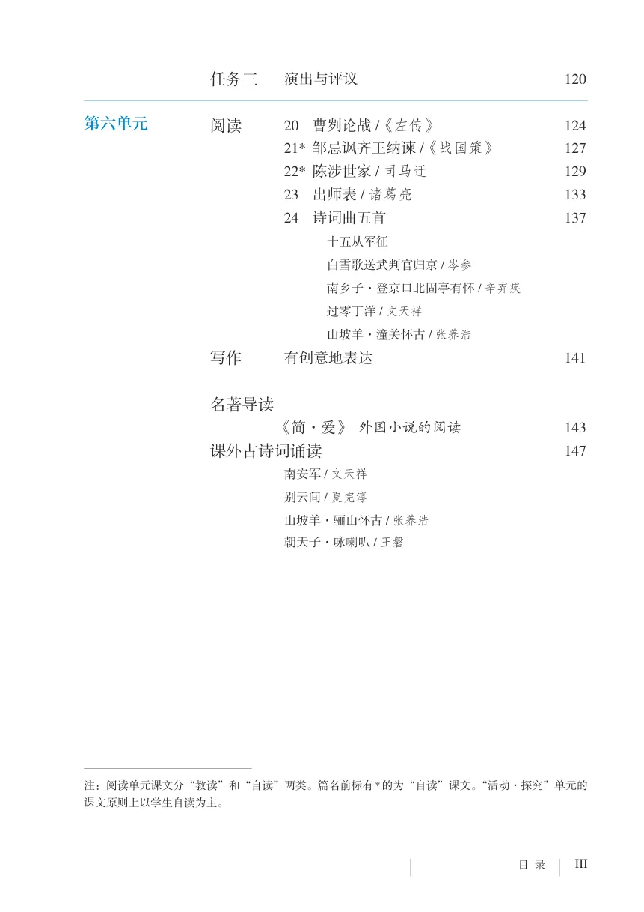
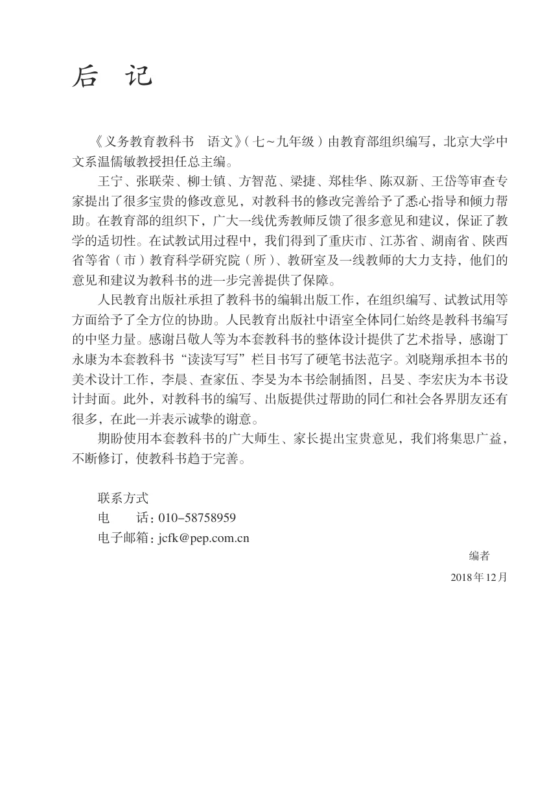
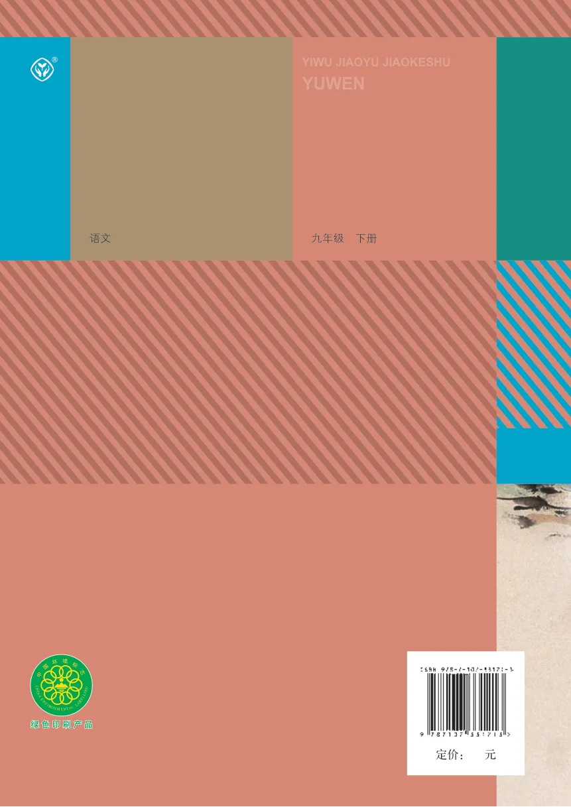

APPENDIX
附录与书末内容
仅收录不属于六个教学单元的前后置页面。
封面、书名页、教材配套资源、目录与过渡页
全国优秀教材特等奖 九年级
义务教育教科书
下册
义务教育教科书
九年级
下册
教育部组织编写
总主编 温儒敏
·北 京·
教材配套资源
与该套学生课本；配套的免费学习资源学习方式：打开微信，扫一扫上面的二维码
免费学习资源包括教学视频、同步视频、同步微课精讲视频、课件教案、趣味动画教师用书、预习视频、思维导图教材答案、教材全解、知识归纳
目 录第一单元阅读 1 祖国啊，我亲爱的祖国 / 舒婷 22* 梅岭三章 / 陈毅 53* 短诗五首 7月夜 / 沈尹默萧红墓畔口占 / 戴望舒断章 / 卞之琳风雨吟 / 芦荻统一 / 聂鲁达4 海燕 / 高尔基 10写作 学习扩写 15第二单元阅读 5 孔乙己 / 鲁迅 186 变色龙 / 契诃夫 237* 溜索 / 阿城 288* 蒲柳人家（节选）/ 刘绍棠 33写作 审题立意 42
综合性学习 岁月如歌——我们的初中生活 44
第三单元阅读 9 鱼我所欲也 /《孟子》 4810* 唐雎不辱使命 /《战国策》 5111 送东阳马生序 / 宋濂 54
目 录第三单元12 词四首 57渔家傲·秋思 / 范仲淹江城子·密州出猎 / 苏轼破阵子·为陈同甫赋壮词以寄之 / 辛弃疾满江红（小住京华）/ 秋瑾写作 布局谋篇 62
名著导读 《儒林外史》 讽刺作品的阅读 64
课外古诗词诵读 69
定风波（莫听穿林打叶声）/ 苏轼临江仙·夜登小阁，忆洛中旧游 / 陈与义太常引·建康中秋夜为吕叔潜赋 / 辛弃疾浣溪沙（身向云山那畔行）/ 纳兰性德第四单元阅读 13 短文两篇 72谈读书 / 弗朗西斯·培根不求甚解 / 马南邨14 山水画的意境 / 李可染 7715* 无言之美 / 朱光潜 8116* 驱遣我们的想象 / 叶圣陶 86写作 修改润色 90
口语交际 辩论 93
第五单元活动·探究 任务一 阅读与思考 9717 屈原（节选）/ 郭沫若 9818 天下第一楼（节选）/ 何冀平 10419 枣儿 / 孙鸿 113
任务二 准备与排练 119
目 录第五单元 任务三 演出与评议 120第六单元阅读 20 曹刿论战 /《左传》 12421* 邹忌讽齐王纳谏 /《战国策》 12722* 陈涉世家 / 司马迁 12923 出师表 / 诸葛亮 13324 诗词曲五首 137十五从军征白雪歌送武判官归京 / 岑参南乡子·登京口北固亭有怀 / 辛弃疾过零丁洋 / 文天祥山坡羊·潼关怀古 / 张养浩写作 有创意地表达 141
名著导读 《简·爱》 外国小说的阅读 143
课外古诗词诵读 147
南安军 / 文天祥别云间 / 夏完淳山坡羊·骊山怀古 / 张养浩朝天子·咏喇叭 / 王磐注：阅读单元课文分“教读”和“自读”两类。篇名前标有 * 的为“自读”课文。“活动·探究”单元的课文原则上以学生自读为主。
后记
《义务教育教科书 语文》（七~九年级）由教育部组织编写，北京大学中文系温儒敏教授担任总主编。
王宁、张联荣、柳士镇、方智范、梁捷、郑桂华、陈双新、王岱等审查专家提出了很多宝贵的修改意见，对教科书的修改完善给予了悉心指导和倾力帮助。在教育部的组织下，广大一线优秀教师反馈了很多意见和建议，保证了教学的适切性。在试教试用过程中，我们得到了重庆市、江苏省、湖南省、陕西省等省（市）教育科学研究院（所）、教研室及一线教师的大力支持，他们的意见和建议为教科书的进一步完善提供了保障。
人民教育出版社承担了教科书的编辑出版工作，在组织编写、试教试用等方面给予了全方位的协助。人民教育出版社中语室全体同仁始终是教科书编写的中坚力量。感谢吕敬人等为本套教科书的整体设计提供了艺术指导，感谢丁永康为本套教科书“读读写写”栏目书写了硬笔书法范字。刘晓翔承担本书的美术设计工作，李晨、查家伍、李旻为本书绘制插图，吕旻、李宏庆为本书设计封面。此外，对教科书的编写、出版提供过帮助的同仁和社会各界朋友还有很多，在此一并表示诚挚的谢意。
期盼使用本套教科书的广大师生、家长提出宝贵意见，我们将集思广益，不断修订，使教科书趋于完善。
联系方式
电 话：010-58758959
电子邮箱：jcfk@pep.com.cn
编者
2018年12月
书末空白页
本组页面无可提取文字，请查看原书页面。
封底
® YIWU JIAOYU JIAOKESHU
YUWEN
语文 九年级 下册
绿色印刷产品绿色印刷产品
定价： 元
原书页面与插图
封面、书名页、教材配套资源、目录与过渡页
返回文字内容 ↑






后记
返回文字内容 ↑
书末空白页
返回文字内容 ↑封底
返回文字内容 ↑